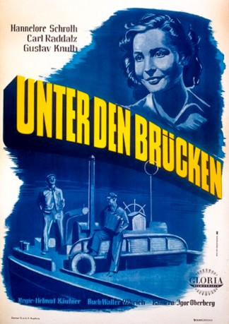

IMDB-Wertung: 7.5 / 10
IMDB-Wertung: 7.5 / 10  Metascore:
Metascore: 
Two barge skippers fall in love with the same woman.
 IMDB-Wertung: 7.5 / 10 Metascore:
Two barge skippers fall in love with the same woman.
Jahr: 1946
Dauer: 99 Minuten
FSK: 12
Land: Deutschland Studio: Gloria Filmverleih AGTonspuren:
Untertitel:
Auflösung: 1080p (1440x1080) Größe: 6717 MB
Regisseur: Helmut Käutner
Drehbuch: Leo de Laforgue, Helmut Käutner, Walter Ulbrich
Soundtrack: Bernhard Eichhorn
Darsteller:
 Gustav Knuth als Willy
Gustav Knuth als Willy Hildegard Knef als Girl in Havelberg
Hildegard Knef als Girl in HavelbergDatei: X:\1900-1949\Unter den Brücken (1946, FSK12, 1440x1080).mkv seit 02.10.2019
Festplatte: Gemischt-01+Anime
 Es gibt insgesamt 80 Filme in der Gruppe '1900-1949'
Es gibt insgesamt 80 Filme in der Gruppe '1900-1949'